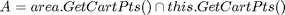
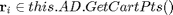
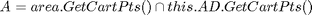
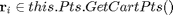

Contents
function [AD,AAD] = GetAverageDensities(this,area,weights)
This function is designed to compute the averaged densities and the functional derivates of the free energy in for Fundamental Measure Theory (FMT). With AD, it computes the convolution of a function defined on a HalfSpace, with a list of weight functions of finite support. The support of the resulting function is a half space, which goes beyond the half space of the original function. With AAD, the convolution of a function defined on this extended halfspace is computed with the same list of weight functions defined in the input.
Input
- area - structure with two methods (1) [int,A] = ComputeIntegrationVector() and (2) pts = GetCartPts(), with pts = struct(y1_kv,y2_kv)
- weights - a cell with a list of functions which get a structure with two arrays [y1_kv,y2_kv] as input and returns one array of same size. [y1_kv,y2_kv] represents a point in polar coordinates, representing the radial and angular component, respectively.
Output
Both AD and AAD are operators for the following convolution:

- AD : , and  (average density)
- AAD : , and  (average the average densities to compute free energy)
AAD = this.AD.ComputeConvolutionFiniteSupport(area,weights,this.Pts);
AD = ComputeConvolutionFiniteSupport(this,area,weights,this.AD.Pts);
end
The class HalfSpaceSkewed_FMT has no property or method named 'GetAverageDensities'.